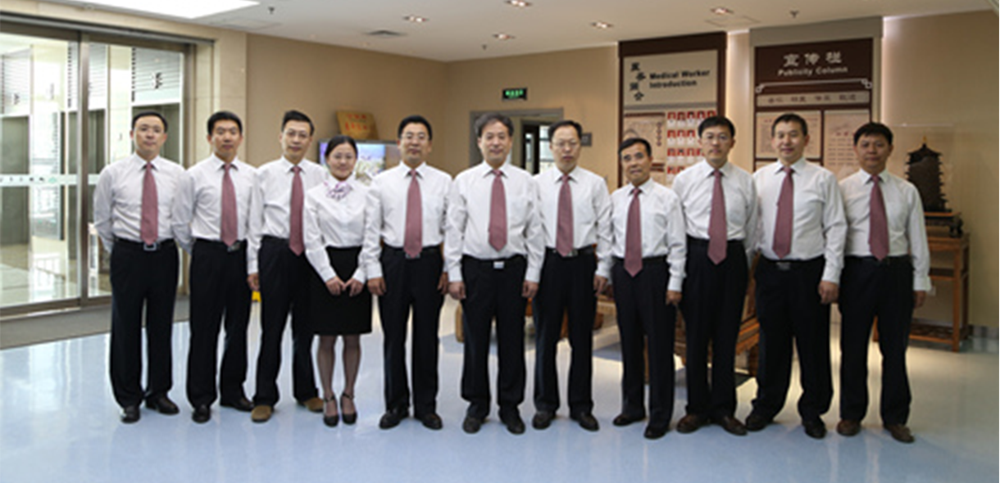

您现在的位置:
医院概况 >
医院简介 >
出诊信息

医院概况

山西省中医药研究院山西省中医院
山西省中医药研究院成立于1957年，2005年增挂山西省中医院院牌，2007年增挂北京中医药大学附属山西省中医院院牌。 全院占地面积8万余平方米，建筑面积5万余平方米。
现有非直属附属医院六所：太原市类风湿病医院、山西稷山骨髓炎医院、孝义市中医院、平遥县中医院、寿阳县中医院、翼城县中医院。2012年组建山西省中医院医疗集团， 11月11日与大同市政府签定了整体托管大同市中医院协议，并接收其为医疗集团首批成员。
名家荟萃 人才辈出
专业齐全 功能完备
医院拥有飞利浦英特瑞1.5T核磁共振成像系统、血管造影成像系统、美国瓦里安10兆直线加速器、海扶超声聚焦肿瘤治疗系统、64排128层全身螺旋CT、数字胃肠X线机、准分子激光治疗系统等固定资产近2亿元。
经过50余年的发展，先后接收山西省西医离职学习中医班、山西省创作骨科研究所及其附属医院筹备处、山西中医杂志社、山西省药物研究所等单位，逐步发展成为6个县处级建制并存、一套领导班子管理的山西省中医药领域规模最大、水平较高、综合实力最强的集医疗、科研、教学为一体的中医医疗机构。
山西省中医院文明旅游倡议书
山西省中医院网络文明倡议书
山西省中医院“文明旅游、礼貌乘...
“医德医风”光荣榜
文明风尚传播宣传语
关于开展向肖汉玺同志学习活动的...
社会主义核心价值观
我院成功举办“医院人文精神与医...
《实现中国梦要走中国道路》专题...
山西省中医院病历复印、复制...
山西省中医院病历复印、复制...
山西省中医院病历复印、复制...
山西省中医院病历复印、复制...
山西省中医院病历复印、复制...
山西省中医院病历复印、复制...
山西省中医院病历复印、复制...
山西省中医院病历复印、复制...
山西省中医院病历复印、复制...
山西省中医院文明旅游倡议书
时间：2019-12-30 点击：5121次
践行文明旅游，是每个游客应尽的义务。我们在尽情享受美景的时候，请千万不要忘记文明旅游。因为，我们的美好言行，也是这美丽风景中的一道“亮丽”风景线
遵守法规秩序、讲究卫生礼仪、爱护环境设施，这些都是公民行为的基本规范，在山西应是如此，去外地也应该如此。为促进我省旅游业蓬勃发展，提高人民旅游文明素质，在此，宣传科向全体科员发出文明旅游倡议：我们应当自觉遵守“中国公民国内旅游文明行为公约”，维护环境卫生和公共秩序，保护生态环境和文物古迹，爱惜公共设施，尊重他人权利，以礼待人，健康娱乐，文明旅游。
我们应当自觉遵守“中国公民出境旅游文明行为指南”，尊重其他国家、其他地区、其他民族、其他宗教的文化习俗，避免因文化差异而导致的“不文明”行为，防止个人行为给国家和城市形象带来损害，展现我们礼仪之邦应有的风采。
我们应当自觉恪守公德、讲究礼仪、文明出行、文明游览，主动提醒和制止他人在旅游过程中的不文明行为。
假期出游的同事们，让我们共同携手提升旅游文明素质，从我做起，从现在做起，从点滴做起，塑造我院文明旅游的新形象！
1957-2005
山西省中医药研究院
2005-2007
山西省中医院
2007-2012
北京中医药大学附属医院
2012-2020
山西省中医院医疗集团
2020-至今
“四位一体”中医医疗机构
山西省中医药研究院
1957年，山西省中医药研究院成立。
山西省中医院
2005年，增挂山西省中医院院牌。
北京中医药大学附属医院
2007年，增挂北京中医药大学附属山西省中医院院牌。
山西省中医院医疗集团
2012年，组建山西省中医院医疗集团，11月11日与大同市政府签定了整体托管大同市中医院协议，并接收其为医疗集团首批成员。
四位一体”中医医疗机构
经过50余年的发展，先后接收山西省西医离职学习中医班、山西省创作骨科研究所及其附属医院筹备处、山西中医杂志社、山西省药物研究所等单位，逐步发展成为6个县处级建制并存、一套领导班子管理的山西省中医药领域规模最大、水平较高、综合实力最强的集医疗、科研、教学为一体的中医医疗机构。

专家出诊（名医门诊）
专家出诊（总院）
专家出诊（胜利分院）
和平分院专家出诊表